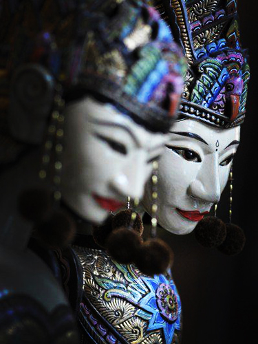

Historia
El festival de marionetas “Arreu”, se inaugura este año 2018 con la intención de promover el arte de los títeres, tanto a nivel educativo como artístico. Se celebrará durante cada domingo del mes de Julio; en el barrio de Velluters. Será una tarde llena de espectáculos, comida y actividades y se alargará hasta la noche.

Arreu d'Orient 2018
Este año en concreto, la temática será “Arreu d’Orient”, de manera que cada fin de semana las actividades y los shows estarán ambientados según las tradiciones titiriteras de distintos lugares asiáticos. Estos lugares son Japón, Nepal, Vietnam, y la Isla de Java. En la programación (link aquí) tienes todas las actividades que se realizarán durante el mes. Si no te quieres perder nada, ven y disfruta de un día inolvidable.
El evento
Con este evento, l’Ajuntament de València quiere dar visibilidad a la tradición del teatro de títeres, tan altamente infravalorado. Además de crear un buen ambiente festivo para gente de todas la edades.
Si deseas mantenerte informado, visita nuestra página web o síguenos en las redes sociales.